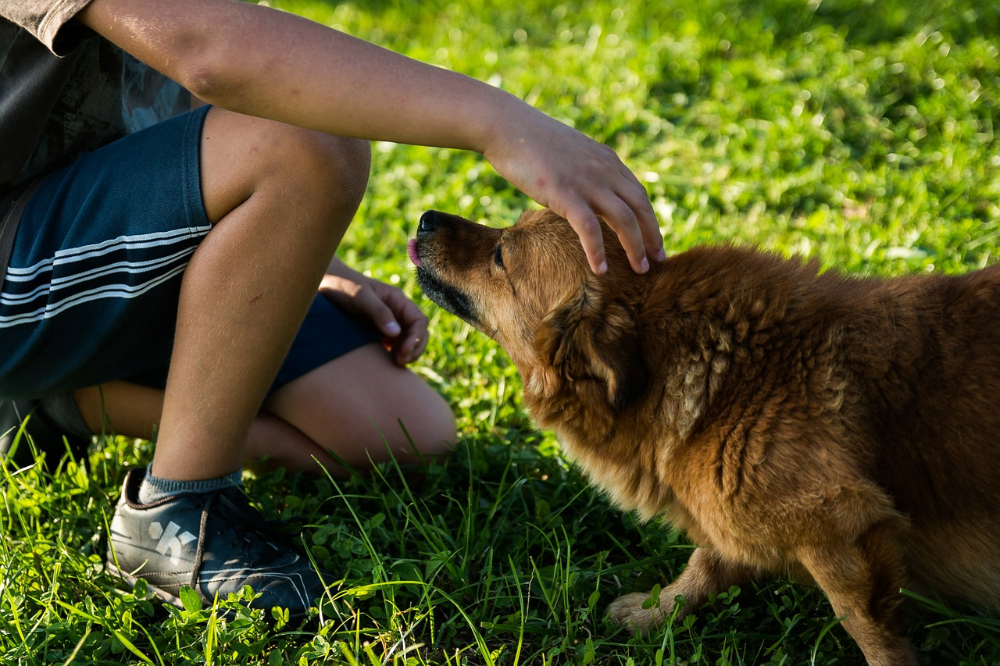
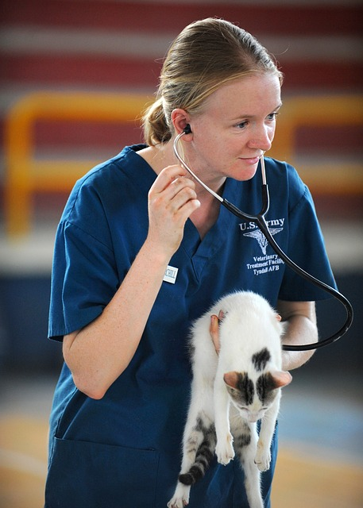
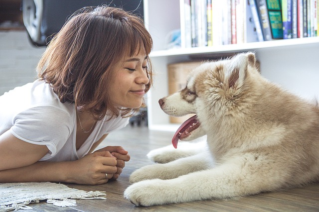
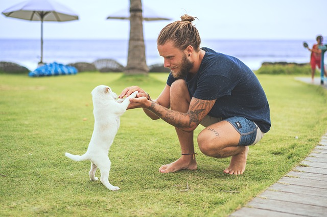

Durham House of Pets
Meet Our Team
All team members at Durham House of Pets have undegone rigorous training in animal safety and have an unbelievable love for animals. Each employee has been trained to respect the animals and their needs.
Jenna Moury
VMD

Jenna has been working with us as a veterinarian since we opened in 2005. She attended UNH's Veterinary school and often says that she loves animals more than people.
EXT. 123
Mary Chambers

Front Desk Employee/Boarding Caregiver
Mary is a fully trained animal caregiver in our boarding facility since 2010. When she isn't helping in the boarding facility, she is usually working the front desk answering any questions you may have about the products we sell
EXT. 321
James Elliot

Boarding Caregiver
James has been working at Durham House of Pets for 3 years. He works as a boarding caregiver to the animals in our boarding facility and is trained in CPR for animals.
EXT. 231